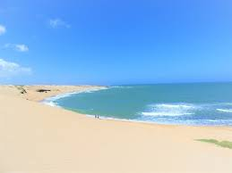
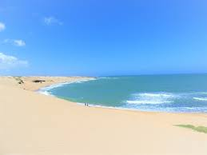
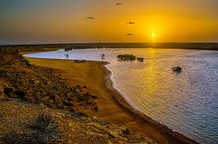

 
Se trata de uno de los atractivos de Playas de La Guajira, hay una hermosa península donde descubrirás durante el recorrido desiertos con diferentes tipos de roca y hermosos bosques secos. Es una playa exótica para disfrutar con un océano increíblemente azulado, ideal para ver en estas relajantes vacaciones.
También encontrarás a la comunidad de la etnia Wayúu, donde podrás, con suerte, toparte con sus integrantes y conocer de cerca una de las pocas culturas de Sudamérica que conservan intactas todas sus tradiciones milenarias.
Muy cerca del sitio podrás disfrutar de uno de los mejores lugares de las Playas de la Guajira, también hallarás al Hotel Y Restaurante Rincon De Xiomi, con un ambiente familiar, donde podrás descansar en hamacas y disfrutar de la especialidad de la casa: un delicioso pescado frito con ensalada y papas fritas, es necesario hacer reserva vía correo electrónico para entrar a la posada.
Referencias
las 10 mejores playas de la Guajira